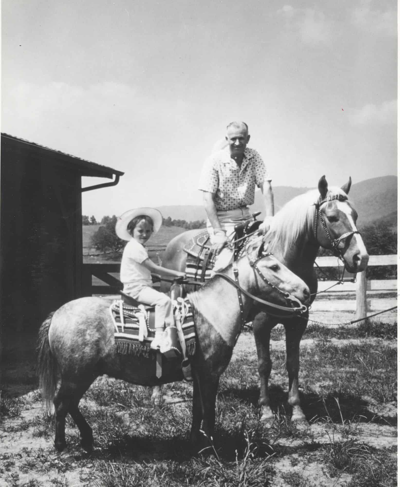
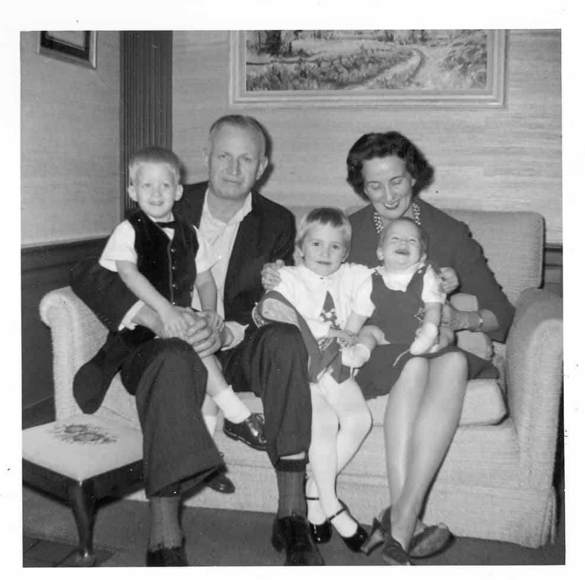

OUR RESORTS
JOIN NOW
TERMS AND CONDITIONS
|
|
OUR RESORTS |
JOIN NOW |
TERMS AND CONDITIONS |
J. Willard intuitively understood the importance of mindfulness, family, and his
impact on others. Inspired by the way our namesake lived his life, JW Marriott
provides a haven where guests are free to take care of themselves—mind,
body, and spirit.
While mindfulness wasn’t a word used in his day, J. Willard practiced it in his own way. Through several daily habits, he was able to reflect, recharge, and be more present with his family,
associates, and guests.
|  |  |
|---|
DAILY JOURNALING From quick entries about his day to longer pride-
|
LOVE OF NATURE J. Willard had a deep appreciation for the
|
SINGINGWhether he was belting out tunes with his
|
Well-known for his deep love and appreciation for family, J. Willard prioritized spending quality time with the most important people in his life.
J. Willard worked hard to build his company, but he also worked hard to connect
with those who mattered most. By spending meaningful moments with his wife,
children, and grandchildren, he was better able to be present in both areas of
his life.